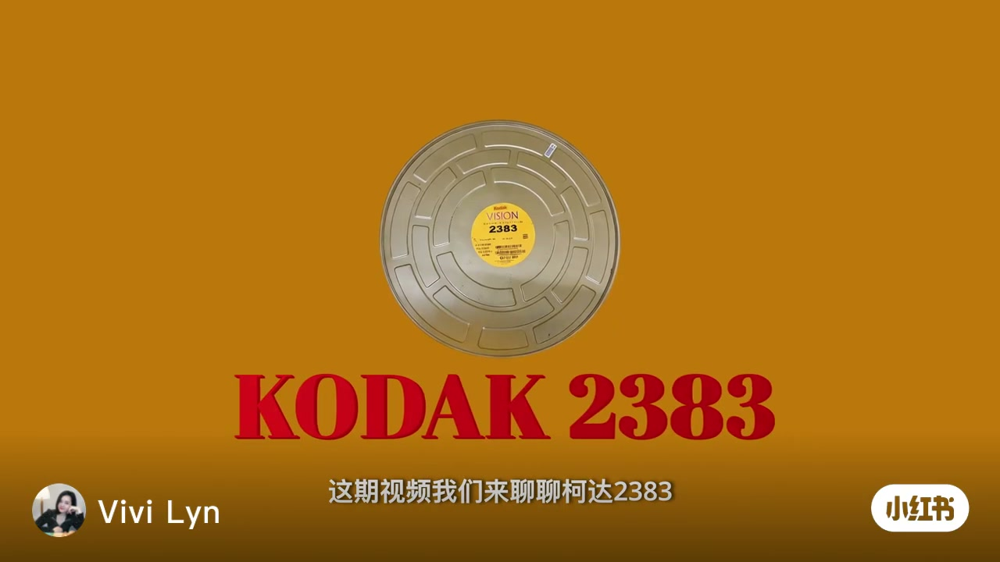
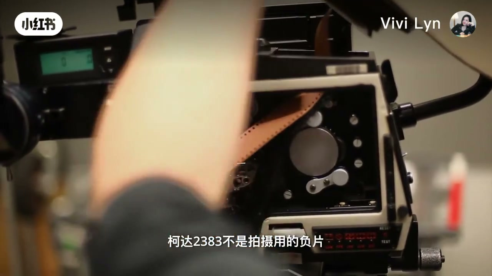
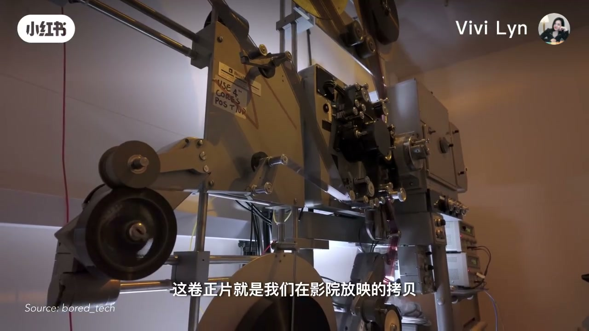
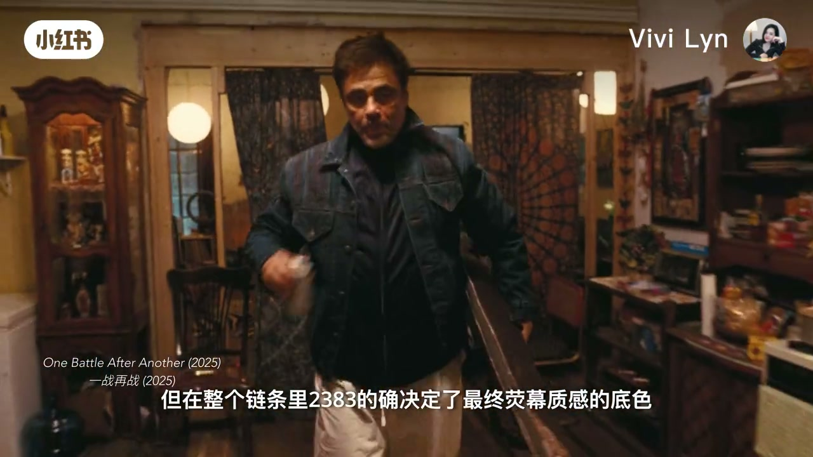
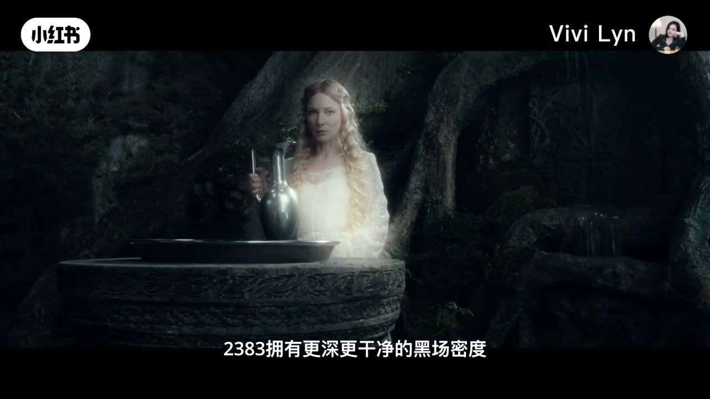
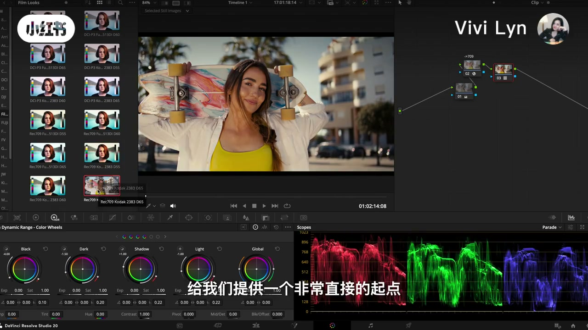

内容要点
口播在开头之后大段听不清，中间还有一段被识别成点号。下面按画面字幕重建。本片停在「达芬奇里已有这套胶片模拟，它只是起点」。片尾预告下期才讲如何正确使用，以及常见色彩问题。那部分不在这一条里。
知识结构
字幕称它是深刻影响全球银幕色彩超过二十年的彩色电影印片。片单从《黑客帝国》《阿凡达》《星际穿越》接到《一战再战》，并说这些放映拷贝几乎都由柯达 2383 制作。奥斯卡这句话是片中说法，本页不另核奖项。
三件事：它是什么胶片，色彩为何像经典电影，核心特性是什么。字幕写明它不是拍摄用的负片，而是放映用的印片。负片经光化学印到正片上，影院放的是这卷拷贝。最终颜色是拍摄、冲印、印片和放映一起做成的。
字幕说，在整条链条里，2383 决定最终银幕质感的底色，它是成像系统里的一环，不是一只盒子。胶片时代它几乎定义好莱坞视觉标准。片单写到黑客帝国三部曲、指环王、黑暗骑士、敦刻尔克。泰坦尼克号和阿凡达一个是胶片拍摄，放映版本仍用 2383。屏幕备注写明：泰坦尼克号指的是 2012 年重映版，不是首映版。
字幕把经典气质收成四句：更深更干净的黑场，高光仍中性；三原色分离高，肤色更自然，这不只是把饱和度拉高；灰阶从黑到白顺滑，所以常被做成数字 LUT；片基更耐用，拷贝经得住反复放映。口播里的「粗糙对比度」「黑胃」与字幕不符，正文不采用。
数字放映已是主流，2383 的银幕审美仍影响今天的调色。达芬奇很早内置了柯达 2383 胶片模拟 LUT。调色页图库里能看到 Rec.709 Kodak 2383 D65。字幕称它是一个非常直接的起点。下期才讲怎么用、会遇到什么色彩问题。
2383 是放映印片的色彩底色，不是拍摄负片，也不是一条可以直接交片的调色配方。黑场、原色分离、灰阶和片基耐用，是这条视频给出的四个观察点。
00:00–00:18
片盒先出场，片单跟着报
黄底上是一只圆形片盒，中间黄标写着 VISION 2383，底下红字是 KODAK 2383。字幕第一句就是「这期视频我们来聊聊柯达 2383」。笔记标题把它叫成经典电影色彩密码，正文则立刻落到印片：一款深刻影响了全球银幕色彩超过二十年的彩色电影印片。

接着切电影画面。《盗梦空间》先闪过，字幕没有停在片名上。随后是《黑客帝国》《阿凡达》《星际穿越》，再接到《一战再战》。左下角标着 One Battle After Another（2025）和中文《一战再战》。字幕说，包括刚刚获得今年奥斯卡最佳影片的这部，它们的放映拷贝几乎都由柯达 2383 胶片制作。「几乎」和「今年奥斯卡」都是片中表述，画面没有出示获奖名单或拷贝记录。
00:18–00:58
三件事里，第一件是胶片类型
大约二十秒处，字幕改口：这期用三分钟搞懂三件事。三行依次是：2383 是什么胶片；它的色彩为何定义了经典电影观感；它的核心特性与色彩表现。背景是一间暖色室内，人影虚掉，字才是这一段的内容。
第一件马上说死。画面是手在电影摄影机里穿片，胶片呈琥珀色，齿孔清晰。字幕写：「柯达 2383 不是拍摄用的负片」。下一句是「而是放映用的印片」。这里和后面那条「怎么正确使用 LUT」不是同一件事。本片先把材料身份说清，还没有进入调色操作。

历史被压成两句。字幕说，90 年代末柯达 2383 正式推出；到 2010 年代初数字放映全面普及之前，它一直是全球电影发行印片的主力胶片。中间闪过一份英文技术页，能读出的包括 VISION Color Print Film、2383，以及片基强度、去掉碳黑 rem-jet、潜影保持之类的产品说明。页上小字不全，不把看不清的参数写进结论。
链条用画面接着讲。柯达 Vision 系列负片拍完，影像经光化学印制转到正片上。放映机前，人在操作片卷，左下角注明画面来源 bored_tech。字幕说：「这卷正片就是我们在影院放映的拷贝。」机器上有一条手写胶带，写着 4 英寸片芯和 POS 7109。7109 是这台机器画面上的字，视频没有把它解释成 2383 的别名，这里也不把两个编号当成同一种片子。

她把最终观影色彩拆开：不是印片单独变出来的，而是拍摄、冲印流程、光化学印片，再到放映系统一起塑造。印片在这条链的后段，所以它碰得到观众看见的那一层。
00:58–01:36
底色，以及一份放映版本备注
回到《一战再战》。男人穿深色外套走在暖色室内，字幕把上一节的链条收成一句：「但在整个链条里 2383 的确决定了最终荧幕质感的底色。」荧幕是字幕用字。下一镜是《星际穿越》，字幕说它不仅仅是载体。再切《黑客帝国》冷青色内景，字幕说它是电影成像系统中的关键一环。口播在这一段能对上，只是把「决定」听成了「的确决」，把荧幕听成了萤幕。

片单再报一遍，这次带创作者。沃卓斯基姐妹的黑客帝国三部曲，彼得·杰克逊的《指环王》，克里斯托弗·诺兰的《黑暗骑士》，然后《敦刻尔克》。字幕说这些经典影片都广泛使用了这款影片。口播把黑暗骑士听成「黑暗奇事」，把敦刻尔克听成「东克尔克」，片名以画面左下角为准。
詹姆斯·卡梅隆的《泰坦尼克号》和《阿凡达》被单独拿出来：虽然一个是胶片拍摄，放映版本同样采用了 2383。屏幕下方有一行备注，比口播多出的信息在这里：这里指的是《泰坦尼克号》2012 年的重映版，不是首映版。字幕接着说，可以说它是电影银幕色彩的参考标尺。「标尺」是她的判断，片中没有给出测量方法。
01:36–02:44
四个特性：黑、原色、灰阶、片基
《星际穿越》户外一场，字幕问：那柯达 2383 究竟特别在哪。下一句把范围定死：经典气质用四个特性来概括。四个特性都在字幕里，没有给操作步骤。
第一组对着黑。深色场景里，白裙人物站在石盆前，背景几乎沉下去。字幕四句连着走：2383 拥有更深、更干净的黑场密度；同时高光保持中性；画面更稳；更有纵深。口播后半把这一段听成「非常粗糙的对比度」「黑胃的质感」。对照字幕，黑场是更深、更干净，不是粗糙；「黑胃」应对黑位。正文只保留字幕这四句。口播还说「这其实就是特性 1」，时间落在后面的采访画面上，指回的仍是这块黑。

接着是《美国电影摄影师》杂志对《好莱坞往事》团队的采访，缩写 ASC 写在画面上。字幕说调色师提到 2383 的鲜明特点：色彩丰富，三原色分离度高，红绿蓝更纯、更鲜明，也就是 Primary Colors。它带来的并不只是更高的饱和度，而是更干净、更明确的色彩关系。同时，肤色更自然、更有质感，这是它看起来有经典胶片放映气质的重要原因。这些是片中转述的调色师说法，采访原文只在后面用英文摘录露了一角。
英文摘录能读清的两句，和黑场、LUT 有关。一句是：画面里没有光的时候，就是黑。另一句是：参考是负片印到正片上，LUT 让他们在数字里看到和样片相同的东西。其余英文行在画面上发虚，不补写。
第三点回到灰阶。字幕说，2383 从黑到白的过渡非常顺滑，因此被广泛用于数字 LUT 模拟。第四点转到材料：片基更耐用、更稳定，拷贝更经得住反复放映，画面品质也更持久。四个点到这里齐了。视频没有给出密度数值或放映次数。
02:44–03:19
内置 LUT 只被叫做起点
字幕承认数字放映已是主流，随即把话拉回审美：2383 所代表的银幕色彩，仍深刻影响着今天的数字调色。正因为如此，达芬奇很早就内置了柯达 2383 的胶片模拟 LUT。这一句配的是土路上的车和扬尘，青天很明显，但软件界面还没出现。
再过几秒才切到达芬奇调色页。左侧胶片外观图库里，一项被框住，名字是 Rec.709 Kodak 2383 D65。右侧是节点，下方是 HDR 色轮和示波器，数值看起来停在默认附近。画面中央是户外滑板的素材。字幕说：给我们提供一个非常直接的起点。本片没有演示把这个 LUT 拖上节点之后怎么收高光、怎么救肤色。

片尾把用法让给下期。字幕说，下期继续分享如何正确使用柯达 2383 这套 LUT，以及可能会遇到的常见色彩问题。然后是求助三连、她叫 Vivi、下期见。正确使用和那些色彩问题，这条视频没有展开。